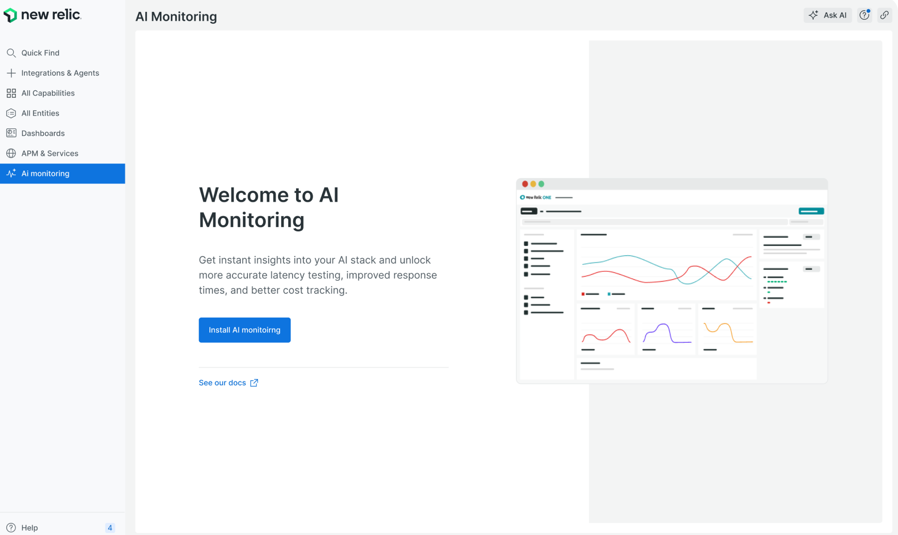
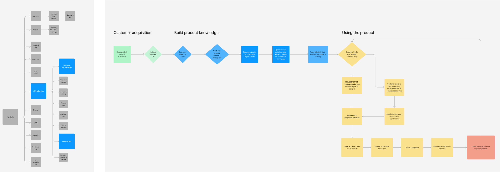

UX Design · New Relic · 2024–2025
AIM Monitoring
Cost Management, Performance Optimisation, End-to-End Visibility, Model Comparison and Optimisation.

Project Story
In the World of AI Chains
In the world of AI chains, visibility isn't just about watching — it's about understanding, improving, and protecting. Every input, every output, every token, every millisecond, and every potential danger is recorded, analysed, and learned from. That's how we build AI systems worthy of trust.
Overview
AIM enables end-to-end tracing of LLM chains with visibility into input-output, errors, token usage, and latency at each step, along with robust output quality and security evaluations while ensuring accuracy and safety.
Timeline: Nov 2024 – June 2025 | Launch: Rolled out to customer end on February event launch for LP.
78%
Reduction in Latency
100%
Increase in Throughput
54%
Reduction in Error Rates
Solution
New Relic turns AI agents from 'hoping the AI works' to knowing exactly how it performs, what it costs, and where to improve. New Relic does not just monitor AI agents; it helps teams master them.
Problems
Business Problem
AI Monitoring fundamentally solves the lack of control, visibility, and confidence in deploying and operating AI applications, particularly those involving Large Language Models in a production environment.
User Problem
User problems boil down to a lack of observability, control, and confidence when operating LLM-powered applications, leading to wasted time, increased costs, and hallucination prompts.
Users
Users responsible for building, operating, protecting, or benefiting from AI applications need monitoring.

AI/ML Engineers
These users focus on the infrastructure and operational aspects of AI systems. They deploy and maintain ML models in production, and manage LLM models and scaling.

CXO
They need high-level dashboards showing AI initiative success, strategic KPIs, and overall AI program health.

Product / Cost Managers
They track conversion rates, user engagement, and feature adoption related to AI-powered functionality, identifying which AI features are driving business value.
Information Architecture
In AI monitoring, you're not just dealing with more data; you're dealing with fundamentally different data that requires intelligence to interpret. Without IA, you are drowning. With IA, you're surfing.

Final Design
The final design enables end-to-end tracing of LLM chains, providing complete visibility and actionable insights across every AI operation.
View Figma DesignOur Customers Using AI Monitoring
New Relic's AI monitoring customers are 298 leads through organic email campaigns and landing page sign ups, leads generated from account executives, and telemetry. Since AIM preview supports Python and Linux, 88 customer profile fits can leverage AIM successfully.


Impact
214
Total views for every 60 min
43
Applications onboarded in a month